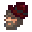

The Mountain
| Article Stub
This article is marked as a stub for the following reason:
|

The Mountain is an exterior region in the northern part of Stardew Valley. Initially, there are only two exits: to the south leading to Pelican Town, and to the west leading to the Backwoods. However, over the course of the game, several events open up new routes:
- On Spring 5, debris blocking the bridge north of the lake is cleared, providing access to the Mines and the Adventurer's Guild.
- On Summer 3, an earthquake opens a pass north from the Mountain to the Railroad.
- The bridge leading to the Quarry at the east end of the map can be repaired (by completing all Crafts Room Bundles or purchasing "Bridge" from the Joja Community Development Form for
 25,000g).
25,000g). - The Glittering Boulder blocking the water flow west of the mine entrance can be removed (by completing all Fish Tank Bundles or purchasing "Panning" from the Joja Community Development Form for 20,000g).
Features
| Image | Name | Description | Occupants |
|---|---|---|---|
 |
Carpenter's Shop | Located to the West, the Carpenter's Shop is where Robin runs her carpenter business. Her husband Demetrius and children Maru and Sebastian also live here in the attached house. | |
 |
Tent | Northeast of the Carpenter's Shop; this is where Linus lives and spends much of his time. | |
 |
Treehouse | Located on the Mountain, in a large tree east of the entrance of the Railroad, and west of Linus' tent. It is only available after reaching 6 hearts of friendship with Leo. | |
 |
The Mines | Beyond the lake lies the entrance to a monster infested mine that is the primary source of stone and ores for the town. | |
 |
Adventurer's Guild | Further along the path from the mines, Marlon and Gil reside here. Once access is gained, it provides a shop selling certain Weapons, Boots, and Rings. It also provides rewards for slaying monsters. |  Gil |
 |
The Quarry | A large area beyond the broken bridge where stone and ore deposits are generated each day. It is unlocked upon completion of the Crafts Room Bundles in the Community Center or purchasing "Bridge" from the Joja Community Development Form for |
Foraging
Forageable items found on the ground in the Mountain are:[1]
- In Spring:
 Leek (58%), and
Leek (58%), and  Wild Horseradish (42%)
Wild Horseradish (42%) - In Summer:
 Grape (62%), and
Grape (62%), and  Spice Berry (38%)
Spice Berry (38%) - In Fall:
 Hazelnut (53%),
Hazelnut (53%),  Common Mushroom (24%), and
Common Mushroom (24%), and  Wild Plum (24%)
Wild Plum (24%) - In Winter:
 Crocus (40%),
Crocus (40%),  Crystal Fruit (38%), and
Crystal Fruit (38%), and  Holly (22%)
Holly (22%)
Forageable items spawn at an average rate of 0.5 per night.[2] The map shows the possible locations as red and magenta tiles; when the original trees are present, the magenta tiles have a 90% smaller chance of spawning items because they are identified as being behind the original trees.
Artifact Spots
Artifacts that can be found by digging up Artifact Spots at the Mountain are:
 Prehistoric Skull (0.6% + 3-6%[3])
Prehistoric Skull (0.6% + 3-6%[3]) Rusty Cog (4%)
Rusty Cog (4%) Prehistoric Handaxe (3%)
Prehistoric Handaxe (3%) Ancient Doll (3%)
Ancient Doll (3%) Prehistoric Tool (2%)
Prehistoric Tool (2%) Trilobite (1.8%)
Trilobite (1.8%) Arrowhead (1.6%)
Arrowhead (1.6%) Chewing Stick (1.5%)
Chewing Stick (1.5%) Bone Flute (0.7%)
Bone Flute (0.7%) Ancient Seed (0.7%)
Ancient Seed (0.7%) Amphibian Fossil (0.6%)
Amphibian Fossil (0.6%) Ancient Sword (0.6%)
Ancient Sword (0.6%) Dinosaur Egg (0.6%)
Dinosaur Egg (0.6%).png/24px-Strange_Doll_(green).png) Strange Doll (green) (0.06%)
Strange Doll (green) (0.06%).png/24px-Strange_Doll_(yellow).png) Strange Doll (yellow) (0.06%)
Strange Doll (yellow) (0.06%)
Other possible items are:
- 1-3
 Clay (14-29%[3])
Clay (14-29%[3])  Lost Book (20% + 3-7%[3]); once all Lost Books have been found, any potential Lost Book is replaced by
Lost Book (20% + 3-7%[3]); once all Lost Books have been found, any potential Lost Book is replaced by  Mixed Seeds.
Mixed Seeds.- Only in Winter:
 Winter Root (18%)
Winter Root (18%) - Only in Winter:
 Snow Yam (12%)
Snow Yam (12%) - 1-3
 Stone (5-10%[3])
Stone (5-10%[3]) - 1-3
 Copper Ore (2.5-5%[3])
Copper Ore (2.5-5%[3]) - 1-3
 Coal (1.8-4%[3])
Coal (1.8-4%[3]) - Only in Spring: 2-5
 Rice Shoots (4%)
Rice Shoots (4%) - An unseen
 Secret Note: up to 3% chance, only if the player has a Magnifying Glass.
Secret Note: up to 3% chance, only if the player has a Magnifying Glass.
Artifact spots spawn at an average rate of 0.4 per night, except in winter when the average rate increases to 0.9 per night.[4]
Villager Paths
Several villagers walk through the western section of the Mountain map and have the potential to destroy items:
Fishing

A large lake containing many types of fish fills the middle of the Mountain map. The Carp found here are particularly easy to catch, making the lake a good location to practice fishing early in the game. A Legendary Fish, the Legend, is also found here, as well as the Legend II, one of the five legendary fish II.
| Time | |||||||||||||||||||||
|---|---|---|---|---|---|---|---|---|---|---|---|---|---|---|---|---|---|---|---|---|---|
| 6 | 7 | 8 | 9 | 10 | 11 | 12 | 1 | 2 | 3 | 4 | 5 | 6 | 7 | 8 | 9 | 10 | 11 | 12 | 1 | ||
| 6 | 7 | 8 | 9 | 10 | 11 | 12 | 1 | 2 | 3 | 4 | 5 | 6 | 7 | 8 | 9 | 10 | 11 | 12 | 1 | ||
| Sunny day only | |||||||||||||||||||||
| 6 | 7 | 8 | 9 | 10 | 11 | 12 | 1 | 2 | 3 | 4 | 5 | 6 | 7 | 8 | 9 | 10 | 11 | 12 | 1 | ||
| Rainy day only | |||||||||||||||||||||
| 6 | 7 | 8 | 9 | 10 | 11 | 12 | 1 | 2 | 3 | 4 | 5 | 6 | 7 | 8 | 9 | 10 | 11 | 12 | 1 | ||
References
- For each forage item, the provided percentage is the average percentage of all forage items that will be the specified item for that season. The input data is Locations.xnb, which is processed by code in GameLocation::spawnObjects.
- Of the 5535 total tiles at the Mountain, 210 (4%) are valid spawn locations for standard forage items. For more information on forage item spawning, see Foraging.
- 3.0 3.1 3.2 3.3 3.4 3.5 The chance of finding extra items in Artifact Spots is season-dependent. The maximum chance is in summer and fall. In winter, the chance is 50% less; in spring it is 6% less. See Artifact Spot for more information.
- Of the 5535 total tiles at the Mountain, 944 (17%) are valid spawn locations for artifact spots in spring, summer, and fall. 1515 (27%) are valid spawn locations in winter. See Artifact Spot for more information.